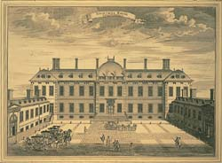

|
|
 Breve
historia del Museo Británico
Breve
historia del Museo Británico
|
| Los
orígenes del Museo Británico se sitúan
en las colecciones del eminente médico y naturalista
Sir Hans Sloane (1660 – 1753). Sir Sloane cedió su museo de
80.000 objetos, su herbario y su biblioteca al rey George II, para
el pueblo británico, a cambio de la suma
de 20.000 libras para sus hijas. Mediante el acta
del Museo Británico de 1753, el Parlamento instituyó una colecta de
fondos para el museo por medio de una lotería pública. El 15 de enero
de 1759, el Museo Británico abrió sus
puertas al público. El museo ha permanecido abierto desde entonces,
con la excepción de las dos guerras mundiales, durante las cuales
se evacuó parte de la colección. Sus horarios de apertura se han ampliado
progresivamente y el número de visitantes ha pasado de unos 5.000
al año, a más de cinco millones en la actualidad. |
 |
 |
Desde sus inicios,
el Museo Británico fue una institución novedosa:
gobernada por un patronato responsable frente al Parlamento, con
colecciones que pertenecen a la nación
y con admisión libre y gratuita para todos. El acta fundacional
indicaba que se debía facilitar la entrada a la institución a "toda
persona estudiosa y curiosa", y, durante toda su historia,
el museo ha combinado el disfrute del público con el estudio y la
pedagogía. Desde su apertura, el museo ofreció una sala de lectura
que proporcionaba acceso a la biblioteca, y se contrató a estudiosos
para que se ocuparan del cuidado y la catalogación de las colecciones.
La primera "sala para estudiantes", la dedicada a los grabados y
dibujos, abrió sus puertas en 1808.
|
| La
colección fundacional constaba esencialmente de libros, manuscritos
y objetos relativos a la historia natural, con algunas antigüedades
(monedas, medallas, grabados y dibujos), y etnografía. El museo se
ubicó inicialmente en una mansión del siglo XVII, que pronto se quedó
pequeña como resultado de la rápida expansión de las colecciones.
En 1823 la donación por Jorge IV a la
nación de la importante biblioteca de su padre (la King's Library),
constituyó el catalizador para la construcción del actual edificio
neoclásico, diseñado por Sir Robert Smirke.
La primera fase quedó prácticamente completa en 1852, seguida en 1857
por la sala de lectura circular, erigida en el patio central diseñado
por Smirke. |

|
|

|
El
siglo XIX fue una época de expansión
popular para el museo, que atrajo a numerosos visitantes de toda edad
y condición, especialmente en días festivos. Si bien el trabajo científico
del museo prosiguió durante este período, con la publicación de una
magnífica serie de catálogos, muchos conservadores se interesaron
en hacer el museo más atractivo para el público, impartiendo conferencias
y mejorando las exposiciones. La primera Sinopsis (guía) popular de
las colecciones se publicó en 1808. |
|
El museo participó
intensamente en excavaciones en el
extranjero. Sus colecciones asirias constituyeron la base del desciframiento
de la escritura cuneiforme, del mismo modo que la adquisición de
la piedra
de Rosetta había resultado en la comprensión de la escritura
jeroglífica.
En la década
de 1880, las colecciones del museo de historia natural se trasladaron
a un nuevo edificio en South Kensington, donde formarían, más adelante,
el Museo de Historia Natural.
Durante el siglo
XX, en especial en su segunda mitad, los servicios públicos experimentaron
una enorme expansión. La primera guía básica del museo se publicó
en 1903; en 1912 se introdujo el primer punto de venta; en 1911
se contrató al primer guía conferenciante; en 1964...
|
 |
 |
...se
contrató un diseñador de exposiciones
a tiempo completo, a lo que siguió un activo programa de renovación
de las galerías. En 1970 se instituyó un servicio pedagógico,
y en 1973 se fundó la editorial del museo.
Las galerías
del rey Eduardo VII, inauguradas formalmente en 1914, la galería
Duveen (1939 y 1962) y la nueva ala (1978) ofrecieron nuevas instalaciones
públicas, oficinas, áreas de exposición y espacio de almacenaje
para la biblioteca. Sin embargo, esto no fue suficiente para resolver
el problema de falta de espacio del museo, por lo que siguieron
realizándose propuestas para la transferencia de colecciones. En
1973, la biblioteca pasó a formar una institución independiente:
la Biblioteca Británica, que en 1998
se trasladó a su propio edificio en St. Pancras.
El
Gran Atrio de la reina Isabel II, que abrió sus puertas en diciembre
de 2000, se creó en parte del espacio liberado por la transferencia
de la Biblioteca Británica. En su centro se encuentra la Sala de
Lectura, restaurada. En la actualidad, el museo centra sus esfuerzos
en los proyectos para la conmemoración de su CCL aniversario, que
se celebrará en 2003, entre los que se cuentan la nueva galería
Wellcome (sala 24) y la renovación de la Biblioteca Real (sala 1).
|
|